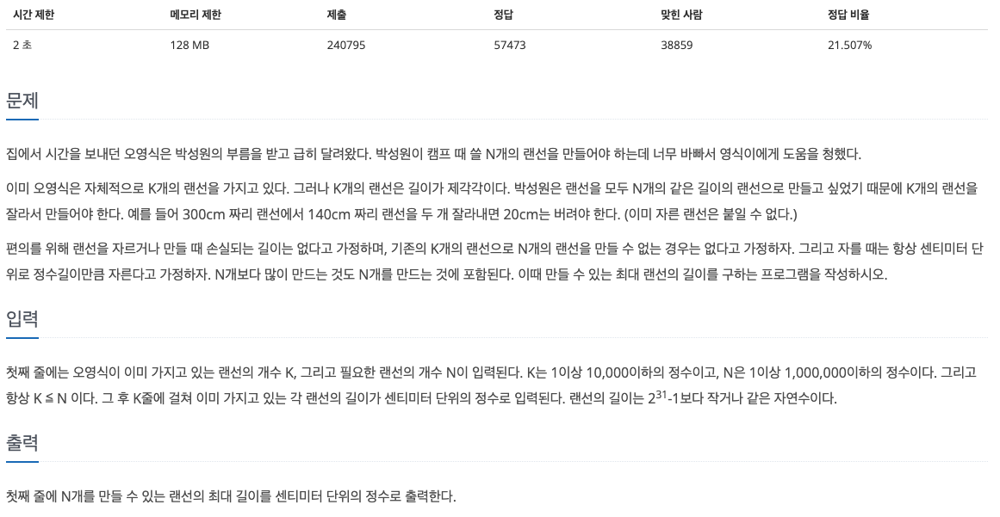
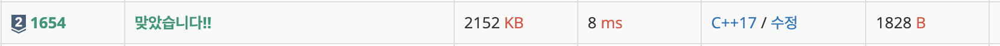

#Info
https://www.acmicpc.net/problem/1654

#Logic
만들 수 있는 최대 랜선의 길이를 구하는 문제이다.
처음으로 가장 단순한 알고리즘인 브루트포스 방식으로 접근해 보았다.
1cm부터 랜선의 최대 길이만큼 반복문을 돌려서, 가능한 모든 경우를 계산하는 로직이다.
하지만 해당 방식은 시간 복잡도가 최소 O(N) 만큼 소모되며,
랜선의 최대 길이는 2^31 - 1 이기에 절대로 시간제한 2초 안에 통과할 수 없다.
다음으로 이분탐색 풀이로 접근해 보았다.
이분탐색 알고리즘은 시간 복잡도가 O(LogN) 만큼 걸리기에, 충분히 통과 가능하다.
우선, 랜선의 개수 K, 필요한 랜선의 개수 N을 입력 받은 뒤
랜선의 길이 정보를 lines vector에 저장한다.
int K, N;
vector<int> lines;
cin >> K >> N;
for (int i = 0; i < K; i++) {
int temp = 0;
cin >> temp;
lines.push_back(temp);
}
Algorithm 헤더에 정의된 max_element 메서드를 사용하여,
랜선 길이가 저장된 벡터에서 최대 길이 값을 maxLineLength 변수에 저장한다.
// maxLineLength 랜선 내부 최대값
auto maxLineIter = max_element(lines.begin(), lines.end());
int maxLineLength = *maxLineIter;
다음은 메인 로직이다.
문제에서 제시한 최대값이 2^31 로 매우 크기에
탐색에 수행할 left, right, mid 변수값을 long long 타입으로 선언하여
오버플로우를 방지한다.
// overflow 방지 long long type 선언
long long res = 0;
long long left = 1, right = maxLineLength, mid;
1cm ~ 라인 최대 길이 만큼 이분 탐색을 진행한다.
만약 생성된 라인 개수 (currentLines) 가 필요 라인 개수 N보다 크다면, 최대값을 비교하여 라인 최대값을 갱신한 뒤,
left 값을 mid + 1로 변경한다.
생성된 라인 개수 (currentLines) 가 필요 라인 개수 N보다 작다면
right 값만 mid - 1 로 변경한다.
while (left <= right) {
mid = (left + right) / 2;
int currentLines = 0; // 생성된 라인 개수
for (int i = 0; i < K; i++) {
currentLines += lines[i] / mid;
}
// case1: 생성된 라인 개수(currentLines) >= 필요한 라인 개수(N)
if (currentLines >= N) {
left = mid + 1;
res = max(res, mid); // 라인 길이 최대값 정보 저장
}
// case2: 생성된 라인 개수(currentLines) < 필요 라인 개수(N)
else {
right = mid - 1;
}
}
cout << res << '\n';
https://github.com/novvvv/PS/blob/main/BOJ/202409/C%2B%2B/BOJ1654.cpp